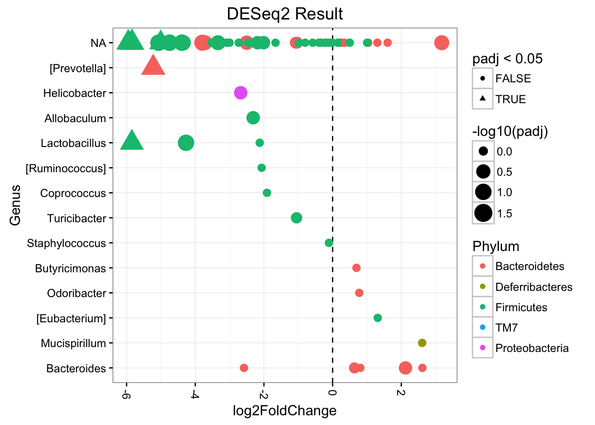
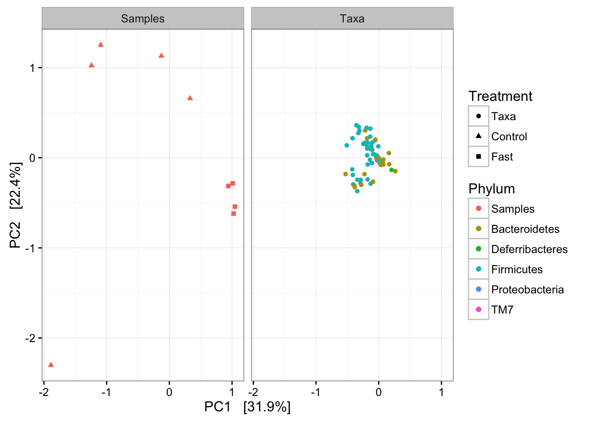
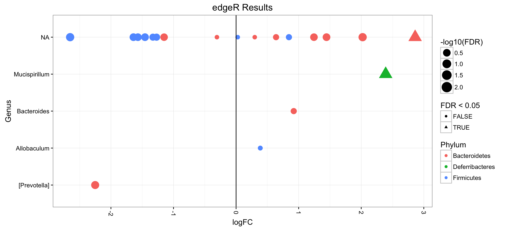
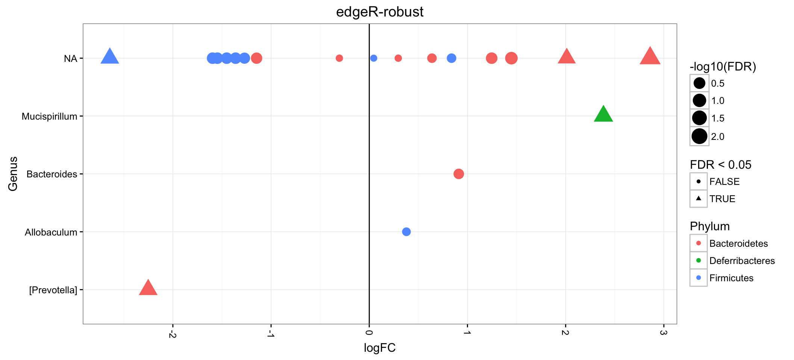
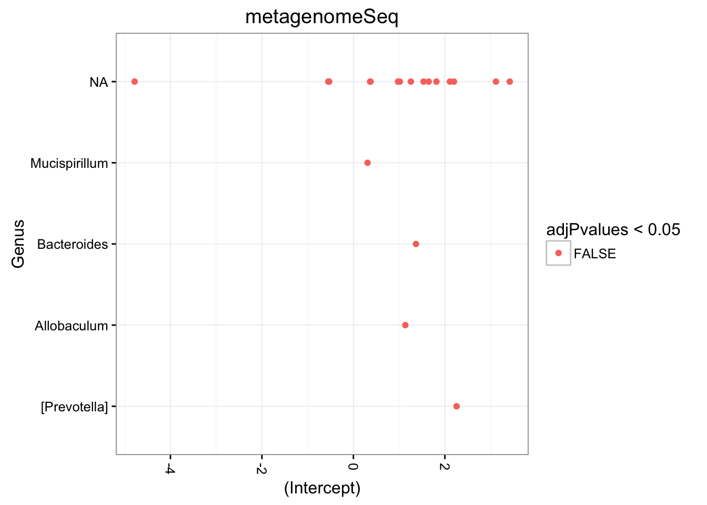
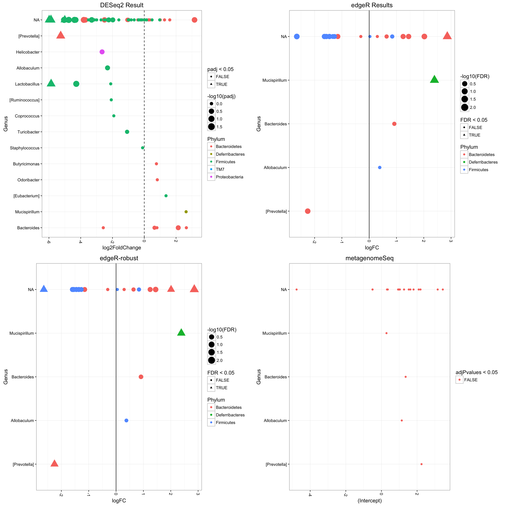

Lab 03: Mixture Models for Testing Differential Abundance – Example Solutions
SISMID 2016 Module 14
Mon Jul 25 14:44:51 2016
Expected Time to Completion: 45 minutes
1 Words of Caution
1.1 The data here is a small toy
The data here is what we call a “toy” example. There are only relatively small number of taxa compared to many common microbiome datasets, like human feces, and these methods are not expected to behave optimally in this current circumstance.
However, all the code “pieces” are in place, so you can see how the “ins and outs” operate and apply this to your own data. Toy data give toy results!
1.2 Check packages are installed
packageVersion("phyloseq")## [1] '1.16.2'packageVersion("edgeR")## [1] '3.14.0'packageVersion("DESeq2")## [1] '1.12.3'packageVersion("metagenomeSeq")## [1] '1.14.2'If something is missing, use the Bioconductor installer:
## try http:// if https:// URLs are not supported
source("https://bioconductor.org/biocLite.R")
biocLite("edgeR")
2 The Poisson case
2.1 “Shot noise” simulation
Time-permitting, I recommend that you review the included shot noise simulation tutorial demonstrating the effect of sample size on species proportion estimates in the simple Poisson case (no overdispersion).
This should be a quick read, and a reminder why we need to include the Library Size(s) in microbiome analyses, as the proportion value itself omits / masks the implicit uncertainty of the sampling process.
The remainder of this lab is concerned with the more complicated case in which we use a mixture model in order to account for additional sources of uncertainty.
3 Startup R session
3.1 Load phyloseq, ggplot2
library("phyloseq"); packageVersion("phyloseq")## [1] '1.16.2'library("ggplot2"); packageVersion("ggplot2")## [1] '2.1.0'3.2 Load provided example data
load("example-data.RData")
lapply(lapply(ls(), get), nsamples)## [[1]]
## [1] 9
##
## [[2]]
## [1] 9
##
## [[3]]
## [1] 26lapply(lapply(ls(), get), ntaxa)## [[1]]
## [1] 73
##
## [[2]]
## [1] 419
##
## [[3]]
## [1] 500
4 DESeq2
4.1 DESeq2 with phyloseq
DESeq2 has an official extension within the phyloseq package and a vignette within phyloseq.
Anders S, Huber W (2010) Differential expression analysis for sequence count data. Genome Biology 11: R106
4.2 DESeq2 conversion
The function phyloseq_to_deseq2 converts your phyloseq-format microbiome data into a DESeqDataSet with dispersions estimated, using the experimental design formula, also shown (the ~Treatment term).
dds = phyloseq_to_deseq2(closedps, ~ Treatment)## Loading required namespace: DESeq2## converting counts to integer mode4.3 DESeq2’s DESeq function
The DESeq function does the rest of the modelling/testing. In this case we’re using its default testing framework, but you can use alternatives via glm interface. The default multiple-inference correction is FDR, and occurs within the DESeq function.
library("DESeq2"); packageVersion("DESeq2")## [1] '1.12.3'dds = DESeq(dds, test="Wald", fitType="parametric")## estimating size factors## estimating dispersions## gene-wise dispersion estimates## mean-dispersion relationship## final dispersion estimates## fitting model and testing4.4 DESeq2 - explore results
results extracts a table of the test results from dds. Very fast. The following will order by FDR, and remove NA values.
res = results(dds)
alpha = 0.05
# Add taxonomy to the results table
res1 = cbind(
as(res, "data.frame"),
as(tax_table(closedps)[rownames(res), ], "matrix"))
# Set NA `padj` values to max, 1.0
res1[is.na(res1$padj), "padj"] <- 1.0
sigtab = res1[which(res$padj < alpha), ]Explore OTUs that were significantly different between the two classes. The following makes a nice ggplot2 summary of the results.
To make the plot look nice, we need to order things for ggplot2, and it typically does this by the order of elements in the factor. This looks a bit complicated, but don’t worry to much about it. We are not changing the data at all here, just the order of unique categories in each factor.
library("ggplot2")
theme_set(theme_bw())
plot_sigtab = function(dsdf){
# Phylum order
x = tapply(dsdf$log2FoldChange, dsdf$Phylum, function(x){max(x)})
x = sort(x, TRUE)
dsdf$Phylum <- factor(as.character(dsdf$Phylum), levels=names(x))
# Genus order
x = tapply(dsdf$log2FoldChange, dsdf$Genus, function(x){max(x)})
x = sort(x, TRUE)
dsdf$Genus <- factor(as.character(dsdf$Genus), levels=names(x))
# Now define the ggplot2 object.
p = ggplot(dsdf,
aes(x = log2FoldChange,
y = Genus,
color = Phylum,
size = -log10(padj),
shape = padj < 0.05)) +
geom_vline(xintercept = 0.0, linetype = 2) +
geom_point(position = position_jitter(width = 0.1, height = 0.0)) +
scale_size_continuous(range = c(3, 7)) +
theme(axis.text.x = element_text(angle = -90, hjust = 0, vjust=0.5)) +
ggtitle("DESeq2 Result")
return(p)
}
pdsd = plot_sigtab(res1)
pdsd
4.5 DESeq2 - Variance Stabilization
DESeq2 provides a variance stabilizing transformation (VST) from the fitted dispersion-mean relation(s). The count data is transformed and normalized by division by the library size factor, yielding a matrix of values which are now approximately homoskedastic (having constant variance along the range of mean values). The rlogTransformation is less sensitive to size factors, which can be an issue when size factors vary widely. This transformation is useful when checking for outliers or as input for machine learning techniques such as clustering or linear discriminant analysis.
Relevant functions
varianceStabilizingTransformationgetVarianceStabilizedDatarlogTransformation/rlog
Note that neither rlog transformation nor the VST are used by the differential expression estimation in DESeq, which always occurs on the raw count data, through generalized linear modeling which incorporates knowledge of the variance-mean dependence. The rlog transformation and VST are offered as separate functionality which can be used for visualization, clustering or other machine learning tasks. See the transformation section of the vignette for more details.
4.6 DESeq2 - VST
Perform VST, store the transformed values in a new table.
vsd = getVarianceStabilizedData(dds)
dim(vsd)## [1] 73 9cpsvsd = closedps
otu_table(cpsvsd) <- otu_table(vsd, taxa_are_rows = TRUE)Compute and display ordination
pca = ordinate(cpsvsd, "RDA")
plot_ordination(cpsvsd, pca, type = "split", color="Phylum", shape="Treatment")
4.7 DESeq2 - Regularized Log
We can do the same thing with regularized log.
The transformed values, rlog(K), are equal to rlog(K_ij) = log2(q_ij) = x_j. * beta_i, with formula terms defined in DESeq function documentation.
rld = rlog(dds, blind = FALSE)
cpsrld = closedps
otu_table(cpsrld) <- otu_table(assay(rld), taxa_are_rows = TRUE)pca = ordinate(cpsrld, "RDA")
plot_ordination(cpsrld, pca, type = "split",
color="Phylum", shape="Treatment")
5 edgeR
5.1 edgeR Background
Robinson MD, McCarthy DJ, Smyth GK (2009) edgeR: a Bioconductor package for differential expression analysis of digital gene expression data. Bioinformatics (Oxford, England) 26: 139–140
Another popular negative binomial method.
5.2 Install edgeR
source("http://bioconductor.org/biocLite.R")
biocLite("edgeR")5.3 Load package and function
library("edgeR"); packageVersion("edgeR")## [1] '3.14.0'Define a function for converting phyloseq data into edgeR DGE format.
################################################################################
#' Convert phyloseq OTU count data into DGEList for edgeR package
#'
#' Further details.
#'
#' @param physeq (Required). A \code{\link{phyloseq-class}} or
#' an \code{\link{otu_table-class}} object.
#' The latter is only appropriate if \code{group} argument is also a
#' vector or factor with length equal to \code{nsamples(physeq)}.
#'
#' @param group (Required). A character vector or factor giving the experimental
#' group/condition for each sample/library. Alternatively, you may provide
#' the name of a sample variable. This name should be among the output of
#' \code{sample_variables(physeq)}, in which case
#' \code{get_variable(physeq, group)} would return either a character vector or factor.
#' This is passed on to \code{\link[edgeR]{DGEList}},
#' and you may find further details or examples in its documentation.
#'
#' @param method (Optional). The label of the edgeR-implemented normalization to use.
#' See \code{\link[edgeR]{calcNormFactors}} for supported options and details.
#' The default option is \code{"RLE"}, which is a scaling factor method
#' proposed by Anders and Huber (2010).
#' At time of writing, the \link[edgeR]{edgeR} package supported
#' the following options to the \code{method} argument:
#'
#' \code{c("TMM", "RLE", "upperquartile", "none")}.
#'
#' @param ... Additional arguments passed on to \code{\link[edgeR]{DGEList}}
#'
#' @examples
#'
phyloseq_to_edgeR = function(physeq, group, method="RLE", ...){
require("edgeR")
require("phyloseq")
# Enforce orientation.
if( !taxa_are_rows(physeq) ){ physeq <- t(physeq) }
x = as(otu_table(physeq), "matrix")
# Add one to protect against overflow, log(0) issues.
x = x + 1
# Check `group` argument
if( identical(all.equal(length(group), 1), TRUE) & nsamples(physeq) > 1 ){
# Assume that group was a sample variable name (must be categorical)
group = get_variable(physeq, group)
}
# Define gene annotations (`genes`) as tax_table
taxonomy = tax_table(physeq, errorIfNULL=FALSE)
if( !is.null(taxonomy) ){
taxonomy = data.frame(as(taxonomy, "matrix"))
}
# Now turn into a DGEList
y = DGEList(counts=x, group=group, genes=taxonomy, remove.zeros = TRUE, ...)
# Calculate the normalization factors
z = edgeR::calcNormFactors(y, method=method)
# Check for division by zero inside `calcNormFactors`
if( !all(is.finite(z$samples$norm.factors)) ){
stop("Something wrong with edgeR::calcNormFactors on this data,
non-finite $norm.factors, consider changing `method` argument")
}
# Estimate dispersions
return(edgeR::estimateTagwiseDisp(edgeR::estimateCommonDisp(z)))
}
################################################################################5.4 edgeR - Quick Filtering
cpsf = filter_taxa(closedps, function(x){sum(x>1) > (length(x)/4)}, prune = TRUE)5.5 edgeR - Convert for edgeR
Now let’s use our newly-defined function to convert the phyloseq data object into an edgeR “DGE” data object, called dge.
dge = phyloseq_to_edgeR(cpsf, group="Treatment")5.6 edgeR - Differential Abundance
Perform two-class test
et = exactTest(dge)5.7 edgeR - Compile Results
Extract values and plot
tt = topTags(et, n=nrow(dge$table), adjust.method="BH", sort.by="PValue")
res = tt@.Data[[1]]
resER = cbind(as(res, "data.frame"),
as(tax_table(closedps)[rownames(res), ], "matrix"))
sigtab = resER[(res$FDR < 0.05), ]5.8 edgeR - Plot
Differential Abundance
pedgeR = ggplot(resER,
aes(logFC, Genus,
color = Phylum,
size = -log10(FDR),
shape = FDR < 0.05)) +
geom_point() +
scale_size_continuous(range = c(3, 7)) +
geom_vline(xintercept = 0) +
theme(axis.text.x = element_text(angle = -90, hjust = 0, vjust = 0.5)) +
ggtitle("edgeR Results")
print(pedgeR)
5.9 edgeR-robust
Zhou, X., Lindsay, H., & Robinson, M. D. (2014). Robustly detecting differential expression in RNA sequencing data using observation weights. Nucleic Acids Research.
estimateGLMRobustDisp - Empirical Robust Bayes Tagwise Dispersions for Negative Binomial GLMs using Observation Weights.
“At times, because of the moderation of dispersion estimates towards a trended values, features (typically, genes) can be sensitive to outliers and causing false positives. That is, since the dispersion estimates are moderated downwards toward the trend and because the regression parameter estimates may be affected by the outliers, genes are deemed significantly differential expressed”
design <- model.matrix(~Treatment, data=data.frame(sample_data(cpsf))) # Define the design matrix for the full model
rer = estimateGLMRobustDisp(dge, design)
rertab <- topTags(exactTest(rer),
n=nrow(dge$table),
adjust.method="BH",
sort.by="PValue")@.Data[[1]]
rertab = cbind(as(rertab, "data.frame"),
as(tax_table(cpsf)[rownames(rertab), ], "matrix"))
#rertab = rertab[(rertab$FDR < 0.05), ]
head(rertab)## Kingdom Phylum Class Order
## 270391 Bacteria Bacteroidetes Bacteroidia Bacteroidales
## 4374042 Bacteria Deferribacteres Deferribacteres Deferribacterales
## 173807 Bacteria Bacteroidetes Bacteroidia Bacteroidales
## 174126 Bacteria Firmicutes Clostridia Clostridiales
## 259609 Bacteria Bacteroidetes Bacteroidia Bacteroidales
## 182995 Bacteria Bacteroidetes Bacteroidia Bacteroidales
## Family Genus Species logFC logCPM
## 270391 Rikenellaceae <NA> <NA> 2.860174 16.32399
## 4374042 Deferribacteraceae Mucispirillum schaedleri 2.385118 16.06727
## 173807 [Paraprevotellaceae] [Prevotella] <NA> -2.251202 16.28262
## 174126 <NA> <NA> <NA> -2.642100 16.50780
## 259609 S24-7 <NA> <NA> 2.011105 15.72938
## 182995 S24-7 <NA> <NA> 1.447463 16.46517
## PValue FDR Kingdom Phylum Class
## 270391 0.0002454804 0.004909609 Bacteria Bacteroidetes Bacteroidia
## 4374042 0.0019604404 0.019604404 Bacteria Deferribacteres Deferribacteres
## 173807 0.0049009896 0.032673264 Bacteria Bacteroidetes Bacteroidia
## 174126 0.0065561686 0.032780843 Bacteria Firmicutes Clostridia
## 259609 0.0124924325 0.049969730 Bacteria Bacteroidetes Bacteroidia
## 182995 0.0342079722 0.114026574 Bacteria Bacteroidetes Bacteroidia
## Order Family Genus Species
## 270391 Bacteroidales Rikenellaceae <NA> <NA>
## 4374042 Deferribacterales Deferribacteraceae Mucispirillum schaedleri
## 173807 Bacteroidales [Paraprevotellaceae] [Prevotella] <NA>
## 174126 Clostridiales <NA> <NA> <NA>
## 259609 Bacteroidales S24-7 <NA> <NA>
## 182995 Bacteroidales S24-7 <NA> <NA>5.10 Plot (Robust)
We already defined the plot for edgeR earlier. Let’s copy that plot, and then replace the data. Magic!
prer = pedgeR
prer$data <- rertab
prer <- prer + ggtitle("edgeR-robust")
print(prer)
5.11 Detach edgeR package
We’re going to move on to other packages. Let’s “unload” edgeR to avoid conflicts, namespace issues.
unloadNamespace("edgeR")
6 metagenomeSeq
6.1 metagenomeSeq - install
source("http://bioconductor.org/biocLite.R")
biocLite("metagenomeSeq")6.2 metagenomeSeq - Links and Background
metagenomeSeq is an official Bioconductor package, with the explicit goal of detecting differential abundance in microbiome experiments with an explicit design.
First, we need functions to
- convert phyloseq data into a microbiomeSeq’s
MGSobject - perform the zero-inflated Gaussian fit
6.3 metagenomeSeq functions
Define a second function to based on our simple two-class experimental design.
Function to perform relevant test (fitZig) - MGS - A metagenomeSeq object, most-likely produced using the conversion tool make_metagenomeSeq() - variable - the variable among the sample_data (aka “phenoData” in metagenomeSeq) that you want to test - physeq - optional phyloseq data object that has the relevant tax_table. phyloseq or taxonomyTable is fine.
library("metagenomeSeq"); packageVersion("metagenomeSeq")## Loading required package: glmnet## Loading required package: Matrix##
## Attaching package: 'Matrix'## The following object is masked from 'package:S4Vectors':
##
## expand## Loading required package: foreach## foreach: simple, scalable parallel programming from Revolution Analytics
## Use Revolution R for scalability, fault tolerance and more.
## http://www.revolutionanalytics.com## Loaded glmnet 2.0-5## Loading required package: RColorBrewer## [1] '1.14.2'# Function to convert form phyloseq object to metagenomeSeq object
phyloseq_to_metagenomeSeq = function(physeq){
require("metagenomeSeq")
require("phyloseq")
# Enforce orientation
if(!taxa_are_rows(physeq)){physeq <- t(physeq)}
OTU = as(otu_table(physeq), "matrix")
# Convert sample_data to AnnotatedDataFrame
ADF = AnnotatedDataFrame(data.frame(sample_data(physeq)))
# define dummy "feature" data for OTUs, using their name
# Helps with extraction and relating to taxonomy later on.
TDF = AnnotatedDataFrame(data.frame(OTUname = taxa_names(physeq), row.names=taxa_names(physeq)))
# Create the metagenomeSeq object
MGS = newMRexperiment(counts=OTU, phenoData=ADF, featureData=TDF)
# Trigger metagenomeSeq to calculate its Cumulative Sum scaling factor.
MGS = cumNorm(MGS)
return(MGS)
}
# Function to perform relevant test (`fitZig`)
# - `MGS` - A metagenomeSeq object, most-likely produced using the conversion tool make_metagenomeSeq()
# - `variable` - the variable among the sample_data (aka "phenoData" in metagenomeSeq) that you want to test
# - `physeq` - optional phyloseq data object that has the relevant `tax_table`.
# `phyloseq` or `taxonomyTable` is fine.
test_metagenomeSeq = function(MGS, variable, physeq=NULL){
require("metagenomeSeq")
require("phyloseq")
# Create the `mod` variable used in the fitZig test.
if( inherits(variable, "factor") ){
# If variable is already a factor, use directly in model.matrix
mod = model.matrix( ~variable )
} else if( inherits(variable, "matrix") ){
# If it is a matrix, assume that model.matrix() has been used already
} else if( inherits(variable, "character") ){
# If it is a character that specifies a variable in phenoData,
# use the corresponding variable from MGS
if( variable %in% colnames(phenoData(MGS)@data) ){
mod = model.matrix(~phenoData(MGS)@data[, variable])
} else {
stop("The phenoData variable name you specified is not present in `phenoData(MGS)`")
}
} else {
stop("Improper specification of the experimental design variable for testing. See `variable` argument")
}
# Wrapper to run the Expectation-maximization algorithm
# and estimate $f_count$ fits with the zero-inflated Guassian (z.i.g.)
fit = fitZig(MGS, mod)
# You need to specify all OTUs to get the full table from MRfulltable.
x = MRfulltable(fit, number=nrow(assayData(MGS)$counts))
# if any OTUs left out, rm those from x. Detected by NA rownames.
x = x[!is.na(rownames(x)), ]
# Modify this data.frame by adding the OTUnames. Clip the ":1" added to the OTU names
rownames(x) <- gsub(":1", "", x=rownames(x), fixed=TRUE)
x$OTUnames <- as.character(rownames(x))
if( !is.null(tax_table(physeq, errorIfNULL=FALSE)) ){
# Attach the bacterial taxonomy to the table, if available
TAX = data.frame(tax_table(physeq))
TAX$OTUnames <- as.character(rownames(TAX))
y = merge(x, TAX, by="OTUnames")
} else {
y = x
}
# Sort and return
y = y[order(y$adjPvalue), ]
return(y)
}6.4 metagenomeSeq - test
Perform metagenomeSeq differential abundance detection. The default method for multiple-inference adjustment in metagenomeSeq::MRfulltable is Benjamini-Hochberg (FDR).
mgs = phyloseq_to_metagenomeSeq(cpsf)## Default value being used.mgsres = test_metagenomeSeq(mgs, "Treatment", cpsf)## it= 0, nll=13.81, log10(eps+1)=Inf, stillActive=20
## it= 1, nll=14.50, log10(eps+1)=0.06, stillActive=8
## it= 2, nll=14.46, log10(eps+1)=0.03, stillActive=5
## it= 3, nll=14.38, log10(eps+1)=0.05, stillActive=5
## it= 4, nll=14.41, log10(eps+1)=0.02, stillActive=4
## it= 5, nll=14.55, log10(eps+1)=0.00, stillActive=06.5 metagenomeSeq - plot
head(mgsres)## OTUnames +samples in group 0 +samples in group 1 counts in group 0
## 1 169398 4 3 9
## 2 173807 5 2 39
## 3 173923 3 3 8
## 4 174126 5 0 31
## 5 182995 5 4 8
## 6 183106 4 1 12
## counts in group 1 oddsRatio lower upper fisherP fisherAdjP
## 1 11 1.2909826 0.012781481 130.32575 1.000000000 1.00000000
## 2 2 Inf 0.253802854 Inf 0.166666667 0.37037037
## 3 5 0.5398122 0.006388843 16.49919 1.000000000 1.00000000
## 4 0 Inf 1.750350751 Inf 0.007936508 0.05291005
## 5 21 0.0000000 0.000000000 Inf 1.000000000 1.00000000
## 6 1 8.3550857 0.307130386 776.34824 0.206349206 0.41269841
## (Intercept) phenoData(MGS)@data[, variable]Fast scalingFactor pvalues
## 1 1.0397871 0.5101904 26.37353 1
## 2 2.2584200 -1.6531739 9.93069 1
## 3 -0.5229753 -0.1896061 95.73518 1
## 4 3.4376782 -2.6181894 -43.89490 1
## 5 0.3489613 1.2578970 48.99140 1
## 6 0.3499203 -1.1795459 74.18522 1
## adjPvalues Kingdom Phylum Class Order
## 1 1 Bacteria Bacteroidetes Bacteroidia Bacteroidales
## 2 1 Bacteria Bacteroidetes Bacteroidia Bacteroidales
## 3 1 Bacteria Firmicutes Clostridia Clostridiales
## 4 1 Bacteria Firmicutes Clostridia Clostridiales
## 5 1 Bacteria Bacteroidetes Bacteroidia Bacteroidales
## 6 1 Bacteria Bacteroidetes Bacteroidia Bacteroidales
## Family Genus Species
## 1 Rikenellaceae <NA> <NA>
## 2 [Paraprevotellaceae] [Prevotella] <NA>
## 3 <NA> <NA> <NA>
## 4 <NA> <NA> <NA>
## 5 S24-7 <NA> <NA>
## 6 S24-7 <NA> <NA>pmgs = ggplot(mgsres,
aes(`(Intercept)`, Genus, color=adjPvalues < 0.05)) +
geom_point(position = position_jitter(width = 0.1, height = 0.0)) +
theme(axis.text.x = element_text(angle = -90, hjust = 0, vjust = 0.5)) +
ggtitle("metagenomeSeq")
print(pmgs)
6.6 metagenomeSeq - Detach package
We’re going to move on to other packages. Let’s “unload” metagenomeSeq to avoid conflicts, namespace issues.
unloadNamespace("metagenomeSeq")
7 Compare Results
7.1 Combining ggplot2 figures
The gridExtra package adds some helpful utilities for dealing with graphic objects created using the low-level R graphics package called grid, which is included as part of the base R distribution. See gridBase for details about combining elements of grid graphics with base R graphics.
7.2 Combining ggplot2 figures
We will use the grid.arrange function from gridExtra
library("gridExtra"); packageVersion("gridExtra")##
## Attaching package: 'gridExtra'## The following object is masked from 'package:Biobase':
##
## combine## The following object is masked from 'package:BiocGenerics':
##
## combine## [1] '2.2.1'7.3 Combining ggplot2 figures BONUS!
grid.arrange(nrow=2, pdsd, pedgeR, prer, pmgs)